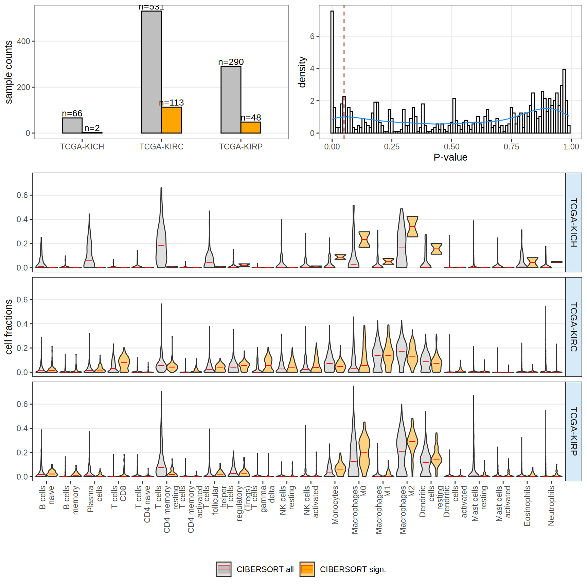
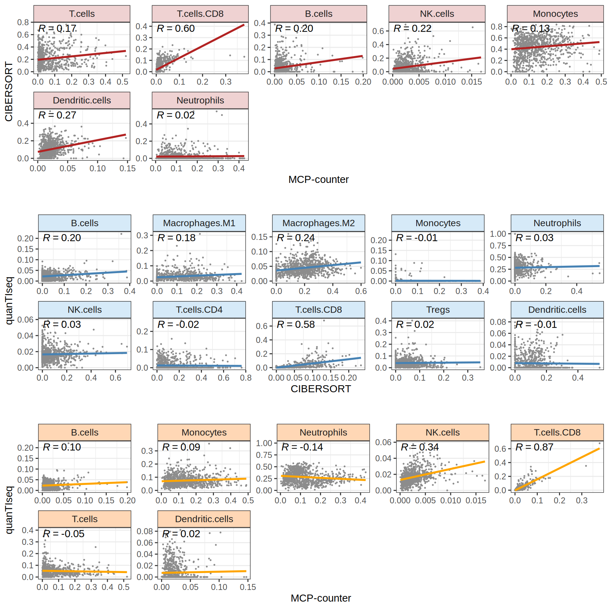

3 Cellular Deconvolution from Bulk RNA-seq
3.1 Infiltrating immune cells
The first step for transcriptomics ana
For this, I will use infiltR, which runs
It includes three common bulk RNA-seq deconvolution tools for quantification of tumor-infiltrating immune cells: CIBERSORT, MCP-counter and quanTIseq. MCP-counter is used to obtain absolute quantification of infiltrating immune cells, while a more detailed profiling of relative immune cells subtypes is performed with CIBERSORT and quanTIseq.
CIBERSORT

Now let’s check the concordance between different estimates

3.1.1 CIBERSORT
Support vector machine
LM 22 signature matrix:
- B.cells.naive
- B.cells.memory
- Plasma.cells
- T.cells.CD8
- T.cells.CD4.naive
- T.cells.CD4.memory.resting
- T.cells.CD4.memory.activated
- T.cells.follicular.helper
- T.cells.regulatory..Tregs.
- T.cells.gamma.delta
- NK.cells.resting
- NK.cells.activated
- Monocytes
- Macrophages.M0
- Macrophages.M1
- Macrophages.M2
- Dendritic.cells.resting
- Dendritic.cells.activated
- Mast.cells.resting
- Mast.cells.activated
- Eosinophils
- Neutrophils
3.1.2 MCP-Counter
it helps more characterize the amount of fibloblast and endothelial cells:
- B lineage
- CD8 T cells
- Cell population
- Cytotoxic lymphocytes
- Endothelial cells
- Fibroblasts
- Monocytic lineage
- Myeloid dendritic cells
- Neutrophils
- NK cells
- T cells
Using Sample, cancer_type as id variables3.1.3 Quantiseq
Quantiseq comes in a handy R package.
Quantiseq is based on (which algorithm)?????
The TIL10 signature can quantify cell fractions for:
- B cells
- Classically-activated (M1) macrophages
- Alternatively-activated (M2) macrophages
- Monocytes
- Neutrophils
- Natural killer (NK) cells
- Non-regulatory (helper) CD4+ T cells
- Cytotoxic CD8+ T cells
- Regulatory CD4+ T (Treg) cells
- Myeloid dendritic cells
- Other uncharacterized cells.
quanTIseq has been extensively validated using real and simulated RNA-seq data, as well as flow cytometry and immunohistochemistry data.
Running quanTIseq deconvolution module
Gene expression normalization and re-annotation (arrays: FALSE)
Removing 17 noisy genes
Removing 15 genes with high expression in tumors
Signature genes found in data set: 110/138 (79.71%)
Mixture deconvolution (method: lsei)
Deconvolution successful!
Using Sample, cancer_type as id variablesCAN WE COMPARE QUANTISEQ AND CIBERSORT ACROSS SAMPLES??
COMPARE QUANTISEQ VS CIBERSORT
3.1.3.1 PLOT THE SAME CELL TYPES ABUNDANCE IN CIBERSORT VS QUANTISEQ AND GET A NICE SCATTER PLOT. IDEALLY, Y = X, R2 AND RMSE
see https://www.bioconductor.org/packages/release/bioc/vignettes/quantiseqr/inst/doc/using_quantiseqr.html#32_Use_case_2:PBMCs_from_GSE107572(Finotello_et_al_2019)
3.2 Characterization of Cancer Molecular Subtype
4 Notes :: Kidney subtype
https://genomemedicine.biomedcentral.com/articles/10.1186/s13073-022-01105-y https://static-content.springer.com/esm/art%3A10.1186%2Fs13073-022-01105-y/MediaObjects/13073_2022_1105_MOESM6_ESM.pdf https://patents.google.com/patent/EP3722444A1/en
CMScalles (CRC) https://www.nature.com/articles/s41598-017-16747-x
adapt for RCC